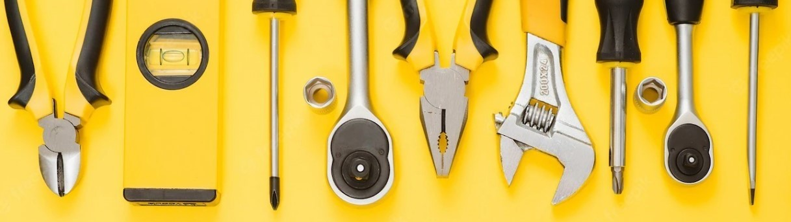
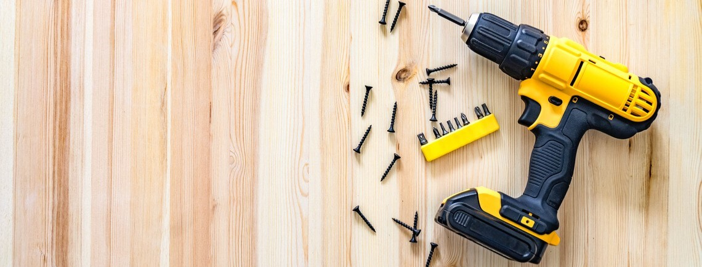

Sobre a empresa
Fundada em outubro de 2022 na cidade do Rio de Janeiro, Politools é uma empresa prestadora de serviços com foco em instalações de pequeno porte. Realizamos instalação de câmeras de segurança, alarmes, elétrica simples, fixações em geral, montagem e desmontagem de móveis, pintura e instalação de pisos laminados.
A Politools é formada por um time de amigos de longa data de diversas áreas de atuação, que terão o prazer em atender as necessidades de nossos clientes com um atendimento personalizado.
Nosso objetivo: Prestar um serviço rápido, limpo e de preço justo sem abrir mão de qualidade e bom acabamento.
Nosso Diferencial
- ✅Velocidade: foco em um trabalho rápido para mínima alteração na rotina do cliente
- ✅Projeto customizado: o material necessário pode ser comprado pelo cliente ou fornecido por nossa equipe
- ✅Limpeza: o local de intalação será limpo e os resíduos descartados após o serviço
Nossa região de atuação
Temos forte prersença na Zona Oeste da cidade do Rio de Janeiro, mas tambénm atendemos no Grande Rio, Costa Verde, Baixada Fluminense, Niterói e São Gonçalo